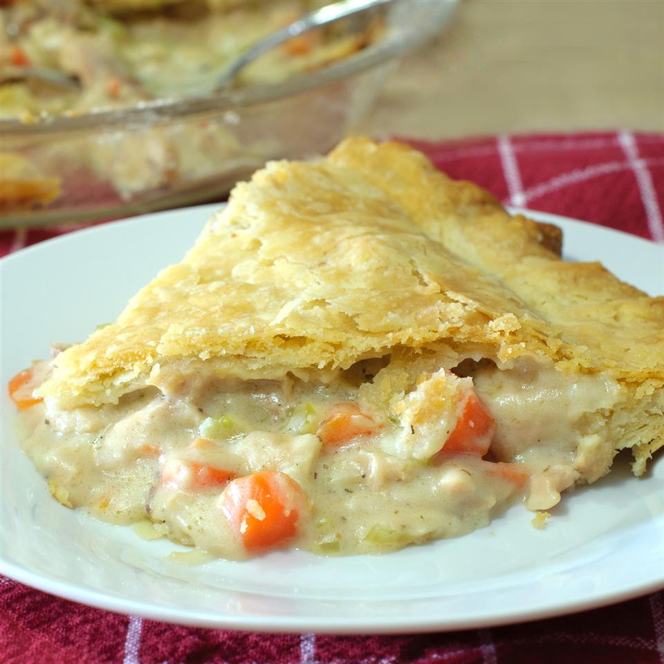

Chicken Pot Pie

Description
Easy, beginner pot pie that your family will love.
Ingredients:
- 1/3 cup butter
- 1/3 cup chopped onion
- 1/3 cup all-purpose flour
- 1/2 teaspoon salt
- 1/4 teaspoon ground black pepper
- 1 3/4 cups chicken broth
- 2/3 cup milk
- 2 cups chopped cooked onion
- 1 (14.5 ounce) can peas and carrots
- 1/2 (15 ounce) can whole new potatoes, drained
- 1 (15 ounce) package prepared double-crust pie pastry
Steps:
- Preheat oven to 425 degrees F (220 degrees C).
- Melt butter in a large skillet over medium heat. Cook and stir onion, flour, salt, and pepper in melted butter until the onion is translucent, about 5 minutes.
- Remove skillet from heat and pour chicken broth and milk into the skillet; bring the mixture to a boil and cook to thicken slightly, about 1 minute.
- Remove skillet from heat and stir chicken, peas and carrots, and potatoes into the broth mixture.
- Press one pie pastry into the bottom of a deep-dish pie pan. Pour the broth mixture into the pie pastry. Top with remaining pastry and press edges together to form a seal. Cut several slits into the top pastry. Place pie plate on a baking sheet.
- Bake in preheated oven until the crust is golden brown, about 30 minutes. Let pie cool and filling thicken at room temperature for 15 to 20 minutes before cutting.